You know that little bird lives near you. Tawari tells you who it is, and who it lives with.
One of the most recorded birds at Sonso Lagoon is the tropical kingbird: the little yellow-and-grey bird you have seen a thousand times on a wire, shouting. It catches insects on the wing and chases hawks much bigger than itself out of its territory. That is what Tawari does: it doesn't stop at the name.
Three places in Valle del Cauca, a hundred species each, and the list came from real records rather than a catalogue.
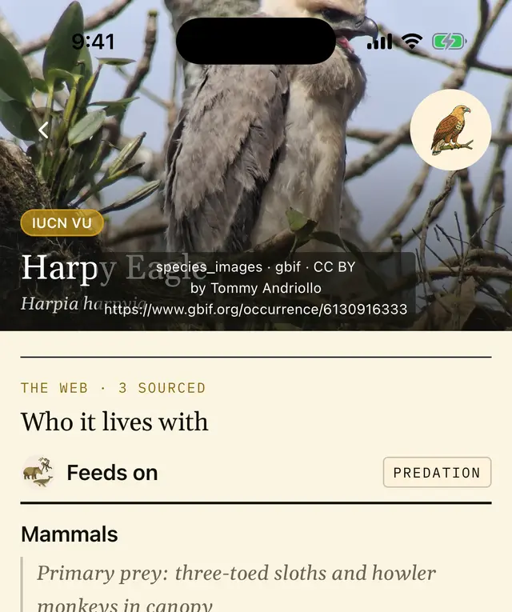
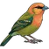
We start in Valle del CaucaMeet your neighbours.
A Field-find is the list of who lives in one place. It gathers the species seen most often there, and some of the most striking ones too, the ones worth going out to look for. It isn't a score and you don't have to finish it. It's a good way to explore a place and feel closer to nature, at any age. There are three for now.
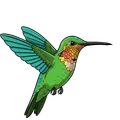
Loading…
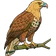
The ecological spineWho eats whom.
This is where other field guides and apps fall short. These are the harpy eagle's relationships, as the app shows them under Who it lives with:
Three-toed sloths and howler monkeys, taken from the canopy.
Manual curation · confidence 0.95Carrion. An apex predator has nothing hunting it; the slot says how it goes back.
Manual curation · confidence 0.95Nests in emergent trees, such as ceibas, in lowland forest that is still standing.
Manual curation · confidence 0.95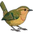
The appWhat happens when you don't know the name.
You saw something. You open the wizard and answer what you know: whether it was an animal or a plant, then details like its silhouette or colours. Any step can be skipped. At the end you get the species that match, but only from among those recorded at the place you are standing, because a species nobody has seen there doesn't belong in a list claiming to say what lives there.
On the card you find how to recognise it, when it appears, what eats it, and what it means to the people here. If you log the sighting it stays in your journal with its date and place. For now nobody else sees it; soon you'll be able to share it with your community.
And if you can't find what you saw, you can still log it unidentified, with a photo and notes, and come back to it later. If you think a place is missing a species, write to hello@tawari.app and we'll look into it.
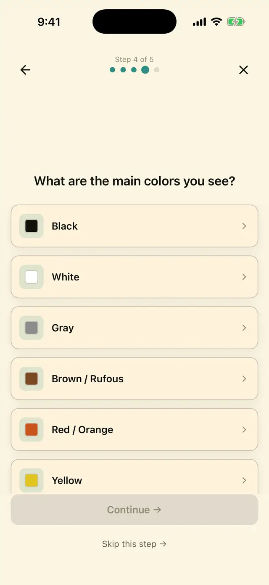
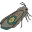
When we don't knowThe card says so.
For a great many Colombian species there is almost nothing published. When that's the case the card says so and stays short, rather than filling the gap. It shows what is documented, such as the name, taxonomy, records and photographs, and nothing more.
And it tells you how to help: log your sightings with a photo and notes, or upload them to iNaturalist too, since its verified records reach GBIF, the open database science works from. You can also tell us about a published source.
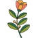
Knowledge with a name attachedWho says so, and where from.
The jaguar's card cites the cosmology of the Kogi of the Sierra Nevada de Santa Marta, where the animal, known as Kaku Shenbuta, embodies the link between the spiritual and material worlds. It also cites the ethnographer Gerardo Reichel-Dolmatoff's work on the Muisca of the Bogotá savanna.
If there is no source to cite, that section simply doesn't appear. We would rather name a specific people and place than speak of "indigenous peoples" in general, and no card gives preparation instructions or medical advice.
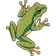
Where we arePre-beta, and it shows.
- Today: closed pre-beta. iPhone first, via TestFlight; Android after.
- What's playable: three Field-finds, all in Valle del Cauca. More coming.
- What you'll see: mistakes, and cards that still fall short. Any feedback or suggestion is welcome.
- For now: your journal is yours alone. Soon you'll be able to share it with your community.
- No advertising, no tracking, not in the app and not on this site. The full figures are here.
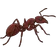
Where the data comes fromSources, not opinions.
- Names and taxonomy: SACC, IOC, eBird/Clements, Avibase, GBIF and SiB Colombia.
- What lives at each place: GBIF and eBird records at those coordinates.
- Ecological relationships: GloBI and manual curation, each with its confidence.
- Photos: Wikimedia Commons, GBIF and iNaturalist, openly licensed only, with author credit.
- Writing: AI helps us draft from cited sources, not invent them. Every written card is reviewed; toxic and psychoactive species get one more safety screen.
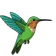
WaitlistBe among the first to try it.
We write to you once, when your TestFlight invitation is ready.
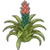
Reserves, botanical gardens and birding clubsA Field-find starts with a place's records.
If you run a reserve, a botanical garden or a birding club and want your place to have one, write to hello@tawari.app. The first thing we need is your species lists.